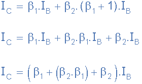

Introduction#
A Darlington transistor is a composite electronic component that integrates two bipolar junction transistors (BJTs) in a cascading configuration. It is widely used for applications requiring high current amplification and sensitivity. This document provides an in-depth look at the structure, advantages, disadvantages, and applications of the Darlington transistor.
Structure#
The Darlington transistor consists of two transistors connected in a manner where the emitter of the first transistor is connected to the base of the second. This arrangement results in a significant amplification of current, as the output current of the first transistor serves as the input current for the second. Consequently, the overall current gain (( \beta )) is the product of the individual gains of the two transistors:
[ \beta_{total} = \beta_1 \times \beta_2 ]
The configuration also includes a base resistor to limit the input current and sometimes additional resistors to stabilize operation.
Key Features of the Structure#
Base-Emitter Junctions: Two base-emitter junctions in series lead to a higher voltage drop (~1.4V for silicon transistors).
Compactness: Many Darlington pairs are integrated into a single package to simplify circuit design.
Additional Protection: Some designs include protection diodes to handle inductive loads.
The following schematic represents the structure of a Darlington pair:
# Drawing the schematic of a Darlington pair
import schemdraw
import schemdraw.elements as elm
with schemdraw.Drawing() as d:
q1 = d.add(elm.BjtNpn(reverse=False).label("T1", loc="bottom"))
d += elm.Line().at(q1.emitter).down().length(0.5)
d += elm.Line().right().length(1)
q2 = d.add(elm.BjtNpn(reverse=False).label("T2", loc="bottom").anchor('base'))
d += elm.Line().at(q2.emitter).down().length(1)
d += elm.Ground()
d += elm.Line().at(q1.collector).up().length(1)
d += elm.Line().at(q2.collector).up().length(1)
d += elm.Line().right().length(1).label("Collector", loc="right")
d += elm.Line().at(q1.base).left().length(1).label("Base", loc="left")
d.draw()
Bipolar Transistor as a Switch#
When the base terminal of the NPN transistor is grounded (0 volts), zero current flows into the base, therefore (I_B = 0). As the base terminal is grounded, no current flows from the collector to the emitter terminals; therefore, the non-conducting NPN transistor is switched OFF (cut-off). If we forward bias the base terminal with respect to the emitter using a voltage source greater than 0.7 volts, transistor action occurs, causing a much larger current to flow through the transistor between its collector and emitter terminals. The transistor is now said to be switched ON (conducting). If we operate the transistor between these two modes of cut-off and conduction, the transistor can function as an electronic switch.
The transistors’ base terminal must switch between zero and some positive value (much greater than 0.7 volts) for the transistor to fully conduct. A higher voltage increases base current ((I_B)), resulting in larger collector current ((I_C)) and a smaller voltage drop across the collector and emitter terminals ((V_{CE})). Then, a smaller current flowing into the base terminal can cause a much larger current to flow between the collector and the emitter.
The ratio of collector current to base current ((\beta)) is the current gain of the transistor. A typical value of (\beta) for a standard bipolar transistor ranges from 50 to 200 and varies even between transistors of the same part number.In some cases where the current gain of a single transistor is too low to directly drive a load, one way to increase the gain is to use a Darlington pair.
A Darlington Transistor configuration, also known as a Darlington pair or super-alpha circuit, consists of two NPN or PNP transistors connected so that the emitter current of the first transistor ((TR_1)) becomes the base current of the second transistor ((TR_2)). Then (TR_1) is connected as an emitter follower and (TR_2) as a common emitter amplifier as shown below.
Also note that in this Darlington pair configuration, the collector current of the slave or control transistor, TR1 is “in-phase” with that of the master switching transistor TR2.
Basic Darilgton Transistor Configuration#
Using the NPN Darlington pair as the example, the collectors of two transistors are connected together, and the emitter of TR1 drives the base of TR2. This configuration achieves β multiplication because for a Base current ib, the collector current is β*ib where the current gain is greater than one, or unity and this is defined as:
This behavior is defined mathematically as:
But the base current, IB2 is equal to transistor TR1 emitter current, IE1 as the emitter of TR1 is connected to the base of TR2. Therefore:
Then substituting in the first equation:

Where β1 and β2 are the gains of the individual transistors.
This means that the overall current gain, β is given by the gain of the first transistor multiplied by the gain of the second transistor as the current gains of the two transistors multiply. In other words, a pair of bipolar transistors combined together to make a single Darlington transistor pair can be regarded as a single transistor with a very high value of β and consequently a high input resistance.
Darlington Transistor Example No. 1#
Two NPN transistors are connected together in the form of a Darlington Pair to switch a 12V 75W halogen lamp. If the forward current gain of the first transistor is 25 and the forward current gain (( \beta )) of the second transistor is 80, ignoring any voltage drops across the two transistors, calculate the maximum base current required to switch the lamp fully ON.
Firstly, the current drawn by the lamp will be equal to the Collector current of the second transistor, then:
Using the equation above, the base current is given as:
Then we can see that a very small base current of only 3.0mA, such as that supplied by a digital logic gate or the output port of a micro-controller, can be used to switch the 75 Watt lamp “ON” and “OFF”.
If two identical bipolar transistors are used to make a single Darlington device then β1 is equal to β2 and the overall current gain will be given as:
Generally the value of β2 is much greater than that of 2β, in which case it can be ignored to simplify the maths a little. Then the final equation for two identical transistors configured as a Darlington pair can be written as:
Identical Darlington Transistors#
Then we can see that for two identical transistors, β2 is used instead of β acting like one big transistor with a huge amount of gain. Darlington transistor pairs with current gains of more than a thousand with maximum collector currents of several amperes are easily available. For example: the NPN TIP120 and its PNP equivalent the TIP125.
The advantage of using an arrangement such as this, is that the switching transistor is much more sensitive as only a tiny base current is required to switch a much larger load current as the typical gain of a Darlington configuration can be over 1,000 whereas normally a single transistor stage produces a gain of about 50 to 200.
Then we can see that a darlington pair with a gain of 1,000:1, could switch an output current of 1 ampere in the collector-emitter circuit with an input base current of just 1mA. This then makes darlington transistors ideal for interfacing with relays, lamps and motors to low power microcontroller, computer or logic controllers as shown.
Advantages#
High Current Gain: The combined configuration achieves gains exceeding 10,000, making it highly efficient for amplification purposes.
High Input Impedance: Minimal loading effect on preceding circuits.
Compact Design: Often available in integrated packages, simplifying circuit design.
Ease of Use: Can amplify very small currents effectively.
Disadvantages#
High Saturation Voltage: Requires a higher base-emitter voltage (1.4V for silicon transistors).
Thermal Concerns: Generates more heat due to increased voltage drops.
Slower Switching: Takes longer to turn ON or OFF compared to single transistors.
Leakage Current: Amplifies the leakage current of the first transistor.
Darlington Transistor Applications#
The base of the Darlington transistor is sufficiently sensitive to respond to any small input current from a switch or directly from a TTL or 5V CMOS logic gate. The maximum collector current Ic(max) for any Darlington pair is the same as that for the main switching transistor, TR2 so can be used to operate relays, DC motors, solenoids and lamps, etc.
One of the main disadvantage of a Darlington transistor pair is the minimum voltage drop between the base and emitter when fully saturated. Unlike a single transistor which has a saturated voltage drop of between 0.3v and 0.7v when fully-ON, a Darlington device has twice the base-emitter voltage drop (1.2 V instead of 0.6 V) as the base-emitter voltage drop is the sum of the base-emitter diode drops of the two individual transistors which can be between 0.6v to 1.5v depending on the current through the transistor.
This high base-emitter voltage drop means that the Darlington transistor can get hotter than a normal bipolar transistor for a given load current and therefore requires good heat sinking. Also, Darlington transistors have slower ON-OFF response times as it takes longer for the slave transistor TR1 to turn the master transistor TR2 either fully-ON or fully-OFF.
To overcome the slow response, increased voltage drop and thermal disadvantages of a standard Darlington Transistor device, complementary NPN and PNP transistors can be used in the same cascaded arrangement to produce another type of Darlington transistor called a Sziklai Configuration.
Sziklai Transistor Pair#
The Sziklai Darlington Pair, named after its Hungarian inventor George Sziklai, is a complementary or compound Darlington device that consists of separate NPN and PNP complementary transistors connected together as shown below.
This cascaded combination of NPN and PNP transistors has the advantage that the Sziklai pair performs the same basic function of a Darlington pair except that it only requires 0.6v for it to turn-ON and like the standard Darlington configuration, the current gain is equal to β2 for equally matched transistors or is given by the product of the two current gains for unmatched individual transistors.
Sziklai Darlington Transistor Configuration#

We can see that the base-emitter voltage drop of the Sziklai device is equal to the diode drop of a single transistor in the signal path. However, the Sziklai configuration can not saturate to less than one whole diode drop, i.e. 0.7v instead of the usual 0.2v.
Also, as with the Darlington pair, the Sziklai pair have slower response times than a single transistor. Sziklai pair complementary transistors are commonly used in push-pull and class AB audio amplifier output stages allowing for one polarity of output transistor only. Both the Darlington and Sziklai transistor pairs are available in both NPN and PNP configurations.
Darlington Transistor IC’s#
In most electronics applications it is sufficient for the controlling circuit to switch a DC output voltage or current “ON” or “OFF” directly as some output devices such as LED’s or displays only require a few milliamps to operate at low DC voltages and can therefore be driven directly by the output of a standard logic gate.
However as we have seen above, sometimes more power is required to operate the output device such as a DC motor than can be supplied by an ordinary logic gate or micro-controller. If the digital logic device cannot supply sufficient current then additional circuitry will be required to drive the device.
One such commonly used Darlington transistor chip is the ULN2003 array. The family of darlington arrays consist of the ULN2002A, ULN2003A and the ULN2004A which are all high voltage, high current darlington arrays each containing seven open collector darlington pairs within a single IC package.
Each channel of the array is rated at 500mA and can withstand peak currents of up to 600mA making it ideal for controlling small motors or lamps or the gates and bases of high power semiconductors. Additional suppression diodes are included for inductive load driving and the inputs are pinned opposite the outputs to simplify the connections and board layout.
The ULN2003A Darlington Transistor Array#
The ULN2003A is a inexpensive unipolar darlington transistor array with high efficiency and low power consumption making it useful for driving a wide range of loads including solenoids, relays DC Motor’s and LED displays or filament lamps. The ULN2003A contains seven darlington transistor pairs each with an input pin on the left and an output pin opposite it on the right as shown.
ULN2003A Darlington Transistor Array#
The ULN2003A Darlington driver has an extremely high input impedance and current gain which can be driven directly from either a TTL or +5V CMOS logic gate. For +15V CMOS logic use the ULN2004A and for higher switching voltages up to 100V it is better to use the SN75468 Darlington array.
When an input (pins 1 to 7) is driven “HIGH” the corresponding output will switch “LOW” sinking current. Likewise, when the input is driven “LOW” the corresponding output switches to a high impedance state. This high impedance “OFF” state blocks load current and reduces leakage current through the device improving efficiency.
Pin 8, (GND) is connected to the loads ground or 0 volts, while pin 9 (Vcc) connects to the loads supply. Then any load needs to be connected between +Vcc and an output pin, pins 10 to 16. For inductive loads such as motors, relays and solenoids, etc, pin 9 should always be connected to Vcc.
The ULN2003A is capable of switching 500mA (0.5A) per channel but if more switching current capability is required then both the Darlington pairs inputs and outputs can be paralleled together for higher current capability. For example, input pins 1 and 2 connected together and output pins 16 and 15 connected together to switch the load.
Summary of Applications#
Darlington transistors are highly versatile and widely used in various electronic systems. Below are expanded applications:
Switching Applications:
Relay Drivers: Darlington pairs can control relays that activate high-power circuits with minimal control current.
Motors and Actuators: Used in DC motor controllers for robotics and industrial machines.
Inductive Loads: Ideal for handling loads such as solenoids due to their high current capacity.
Touch-Sensitive Circuits: Utilized in devices requiring high sensitivity to small input currents, such as touch sensors and water-level indicators.
Amplification Applications:
Audio Systems: Frequently employed in audio amplifiers due to their high current gain and capability to drive speakers.
Signal Conditioning: Used in sensor circuits to amplify weak signals for further processing.
Integrated Circuit Solutions:
ULN2003A and Similar ICs: These ICs incorporate multiple Darlington pairs, making them ideal for driving stepper motors, LEDs, and other loads in automation systems.
Lighting Control: Used in applications requiring precise control of light sources, such as dimmers.
High-Power Applications:
Power Supplies: Darlington pairs help regulate high current in switching power supplies.
Industrial Automation: Widely used in controllers for industrial machinery and production systems.
Energy Management:
Solar Inverters: Enhance efficiency by amplifying signals in renewable energy systems.
Battery Chargers: Regulate currents in smart battery charging systems.
Darlington Transistor vs. MOSFET: Selection Guidelines#
Key Takeaways:
Darlington Transistor:
Combines two or more bipolar junction transistors (BJTs) to achieve a higher current gain.
Suitable for applications requiring high input impedance and substantial current amplification.
Exhibits slower switching speeds and higher saturation voltages, leading to increased power dissipation.
Commonly used in low-frequency applications like audio amplifiers and signal processing.
MOSFET (Metal-Oxide-Semiconductor Field-Effect Transistor):
Voltage-controlled devices with high input impedance and fast switching capabilities.
Ideal for high-speed and high-efficiency applications, such as switching power supplies and digital circuits.
Lower on-resistance and faster response times compared to Darlington transistors.
Generally more efficient with lower power losses, especially in high-frequency operations.
Selection Guidelines:
Use Darlington Transistors when:
High current gain is essential, and switching speed is not critical.
The application involves low to medium frequency operations.
Simplicity and ease of implementation are priorities.
Use MOSFETs when:
Fast switching and high efficiency are required.
Operating at high frequencies or in digital circuits.
Lower power dissipation is crucial for the application.
For a more detailed comparison, refer to the original article: Darlington Transistor vs. MOSFET: Selection Guidelines
Code Simulation#
To better understand the behavior of a Darlington transistor, we can simulate its response using PySpice.
import matplotlib.pyplot as plt
import numpy as np
beta1 = 100
beta2 = 150
Iin = np.linspace(0, 0.02, 100)
Iout = beta1 * beta2 * Iin
plt.figure(figsize=(8, 6))
plt.plot(Iin, Iout, label="Darlington Transistor Output", color="blue")
plt.xlabel("Input Current (A)")
plt.ylabel("Output Current (A)")
plt.title("Darlington Transistor Input vs Output Current")
plt.legend()
plt.grid()
plt.show()
Vbe_on = 0.7
Vbe_total = 2 * Vbe_on
print(f"Total Base-Emitter Voltage Drop: {Vbe_total} V")
Total Base-Emitter Voltage Drop: 1.4 V
from PySpice.Spice.Netlist import Circuit
from PySpice.Probe.Plot import plot
import matplotlib.pyplot as plt
# Create a new circuit
circuit = Circuit("Darlington Pair")
# Define the SPICE model directly in the script
circuit.model('2N2222', 'NPN',
IS=1e-14, BF=200, NF=1, VAF=100, IKF=0.3,
ISE=2e-14, NE=1.5, BR=3, NR=1, VAR=50, IKR=0.05,
ISC=1e-13, NC=2,
RB=10, RC=0.3, RE=0.2,
CJE=2e-12, VJE=0.75, MJE=0.33, TF=400e-12,
CJC=2e-12, VJC=0.75, MJC=0.33, TR=50e-9
)
# Define the Darlington pair
# First transistor
circuit.BJT(1, 'NODE1', 'BASE', 'EMITTER', model='2N2222')
# Second transistor
circuit.BJT(2, 'OUT', 'NODE1', 'EMITTER', model='2N2222')
# Add resistors and voltage source
circuit.R(1, 'BASE', 'V_IN', 1e3) # Base resistor
circuit.R(2, 'OUT', 'GND', 10) # Load resistor
circuit.V(1, 'V_IN', 'GND', 2) # Input voltage source (start at 2V to bias properly)
# Simulate the circuit
simulator = circuit.simulator(temperature=25, nominal_temperature=25)
analysis = simulator.dc(V1=slice(2, 5, 0.1)) # Sweep the input voltage from 2V to 5V
# Plot the output
plt.figure(figsize=(10, 6))
plt.plot(analysis['V_IN'], analysis['OUT'], label='Vout vs Vin')
plt.title('Darlington Pair Output')
plt.xlabel('Input Voltage (V)')
plt.ylabel('Output Voltage (V)')
plt.grid()
plt.legend()
plt.show()
---------------------------------------------------------------------------
ModuleNotFoundError Traceback (most recent call last)
Cell In[3], line 1
----> 1 from PySpice.Spice.Netlist import Circuit
2 from PySpice.Probe.Plot import plot
3 import matplotlib.pyplot as plt
ModuleNotFoundError: No module named 'PySpice'
Conclusion:#
While both Darlington transistors and MOSFETs have their respective advantages, MOSFETs are generally preferred in modern electronic designs for switching and amplification tasks due to their higher efficiency, faster switching speeds, and better thermal performance. However, the choice between the two should be guided by the specific requirements of the application, including factors like load characteristics, switching frequency, and drive circuitry.
References: